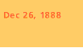

|
| . |
|
for further research Titles preceded by an asterisk (*) may be purchased through the Museum Shop. Titles preceded by a plus sign(+) are available for reference in the museum's Elizabeth Stone Robson Teacher Resource Center.
*+Douglas W. Druick and Peter Kort Zegers in collaboration with Britt Salvesen; contributions by Kristin Hoermann Lister and assisted by Mary C. Weaver. Van Gogh and Gauguin: The Studio of the South. Chicago: The Art Institute of Chicago, 2001.
Hartrick, Archibald Standish. A Painter's Pilgrimage through Fifty Years. Cambridge: Cambridge University Press, 1939.
*Jirat-Wasiutynski, Vojtech. Vincent van Gogh's Self-Portrait Dedicated to Paul Gauguin: A Historical and Technical Study. Cambridge, Mass.: Center for Conservation and Technical Studies, Harvard University Art Museums, 1984. A technical study of the self-portrait van Gogh painted in Arles and dedicated to Gauguin. *Maurer, Naomi E. The Pursuit of Spiritual Wisdom: The Thought and Art of Vincent van Gogh and Paul Gauguin. Madison, N.J.: Fairleigh Dickinson University Press, 1998. An in-depth analysis of the relationship between van Gogh and Gauguin at Arles. Maurer discusses the work of both artists within the context of the Symbolist movement. Pickvance, Ronald. Van Gogh in Arles. New York: The Metropolitan Museum of Art and Harry N. Abrams, 1984.
Rewald, John. Post-Impressionism: From van Gogh to Gauguin. New York: Museum of Modern Art, 1956. An important survey of Post-Impressionism that covers such topics as Symbolism, Pointillism, the collaboration of van Gogh and Gauguin in Arles, and the careers of many individual artists. Roskill, Mark W. Van Gogh, Gauguin, and the Impressionist Circle. Greenwich, Conn.: New York Graphic Society, 1970. A study of van Gogh's and Gaugin's relationship to Impressionism, with two chapters devoted to their stay in Arles. *Silverman, Debora. Van Gogh and Gauguin: The Search for Sacred Art. New York: Farrar, Straus, and Giroux, 2000.
Uitert, Evert van. Vincent van Gogh in Creative Competition: Four Essays from Simiolus. Zutphen, the Netherlands: Nauta, 1983.
PUBLICATIONS ABOUT VINCENT VAN GOGH
Hulsker, Jan. Vincent and Theo van Gogh, a Dual Biography. Ann Arbor, Mich.: Fuller Publications, 1990.
Kodera, Tsukasa. Vincent van Gogh: Christianity versus Nature. Amsterdam and Philadelphia: John Benjamins, 1990. Kodera explores the tension between natural and Christian themes in van Gogh's paintings. He discusses van Gogh's deep roots in Christianity as well as his interest in current French novels and Japanese art. Mancoff, Debra N. Sunflowers. Chicago: The Art Institute of Chicago, 2001.
Pickvance, Ronald. Van Gogh in Saint-Rémy and Auvers. New York: The Metropolitan Museum of Art and Harry N. Abrams, 1986.
*Stolwijk, Chris and Richard Thomson. Theo van Gogh 1858–1891: Art Dealer, Collector, and Brother of Vincent. Amsterdam: Van Gogh Museum; Zwolle: Waanders Publishers, 2000.
*+Thomson, Belinda. Artists in Focus: Van Gogh. Chicago: The Art Institute of Chicago, 2001.
Tsukasa, Kódera and Yvette Rosenberg, eds. The Mythology of Vincent van Gogh. Tokyo: Asahi; Amsterdam: John Benjamins, 1993.
Vincent van Gogh. New York: Rizzoli, 1990.
*Van Gogh Face to Face: The Portraits. Detroit: The Detroit Institute of Arts in association with Thames & Hudson, 2000.
*Walther, Ingo F. Vincent van Gogh: The Complete Paintings. Koln: Bendedikt Taschen, 1993.
Zemel, Caroline M. The Formation of a Legend: Van Gogh Criticism, 1890–1920. Ann Arbor, Mich.: UMI Research Press, 1980. A survey of criticism of van Gogh's work, dating from his death to thirty years later. The book is divided into two time frames (1890–1900 and 1900–1920) and then by region (Germany, France and England, and the Netherlands). PUBLICATIONS ABOUT PAUL GAUGUIN Bodelsen, Merete. Gauguin's Ceramics, a Study in the Development of His Art. London: Faber and Faber, 1964.
Boyle-Turner, Caroline. The Prints of the Pont-Aven School: Gauguin and His Circle in Brittany. Washington, D.C.: Smithsonian Institution Traveling Exhibition Service; New York: Abbeville Press, 1986.
Brettell, Richard, et. al. The Art of Paul Gauguin. Washington, D.C.: National Gallery of Art, 1988. Exhibition catalogue considering the entire range of Gauguin's oeuvre. Includes a chronology and an extensive bibliography. Gray, Christopher. Sculpture and Ceramics of Paul Gauguin. Baltimore: Johns Hopkins Press, 1963.
*+Salvesen, Britt with Douglas W. Druick and Peter Kort Zegers. Artists in Focus: Gauguin. Chicago: The Art Institute of Chicago, 2001.
Sweetman, David Paul. Gauguin, a Complete Life. London: Hodder & Stoughton, 1995. An in-depth biography of Gauguin. Included are family photos, a history of the Gauguin family from colonial Peru to France, and extensive information on Tahiti and the contemporary world that influenced the artist. *Thomson, Belinda, ed. Gauguin by Himself. Boston: Little, Brown, and Company, 1993. Excerpts from the artist's letters and writings. Wildenstein, Georges. Gauguin. Paris: Les Beaux-Arts, 1964.
PUBLICATIONS ABOUT the LETTERS Gauguin, Paul. Correspondance de Paul Gauguin. Victor Merlhès, ed. Paris: Fondation Singer-Polignac, 1984.
Gauguin, Paul. Lettres de Gauguin à Daniel de Monfreid. Paris: G. Falaize, 1950.
Gauguin, Paul. Paul Gauguin: Letters to His Wife and Friends. Cleveland: World, 1949.
+Gogh, Vincent van. Complete Letters: With Reproductions of All the Drawings in the Correspondence. Boston: Bulfinch Press, 2000.
Gogh, Vincent van. The Letters of Vincent van Gogh. Selected and edited by Ronald de Leeuw. New York: Penguin Books, 1998. A condensed version of the multi-volume collection of letters. Hulsker, Jan. "Vincent's Stay in the Hospitals at Arles and St.-Rémy: Unpublished Letters from the Reverend Mr. Salles and Doctor Peyron to Theo van Gogh." Vincent 1 (1970): 20–31.
Jansen, Leo and Jan Robert, eds. Brief Happiness: The Correspondence of Theo van Gogh and Jo Bonger. Amsterdam: Van Gogh Museum; Zwolle: Waanders, 1999.
Merlhès, Victor. Paul Gauguin et Vincent van Gogh 1887–1888: Lettres Retrouvées, Sources Ignorées. Taravao, Tahiti: Avanti et Apres, 1989.
Anholt, Laurence. Camille and the Sunflowers. Hauppauge, NY: Barron's Educational Series, 1994. *Becker, Christopher. Paul Gauguin: A Journey to Tahiti. Munich: Prestel Verlag, 2001. *Bernard, Bruce. Van Gogh. New York: Dorling Kindersley Publishing, 2000. *Breunesse, Caroline. Visiting Vincent van Gogh. Munich: Prestel Verlag, 1997. Harrison, Peter. Vincent van Gogh. New York: Sterling Publishing, 1996. Hughes, Andrew, Antony Mason, and Jen Green. Van Gogh. Hauppauge, NY: Barron's Educational Series, 1994. Pierre, Michel, and Phillipe Moins. Good Day, Mr. Gauguin. Broomall, Pennsylvania: Chelsea House Publishers, 1995. *Greenfeld, Howard. "Paul Gauguin." First Impressions Series: Introductions to Art. New York: Harry N. Abrams, 1993. *Rubin, Susan Goldman and Joseph A. Smith. The Yellow House: Vincent van Gogh and Paul Gauguin Side by Side. New York: Harry N. Abrams, 2001. *Venezia, Mike. "Paul Gauguin." Getting to Know the World's Greatest Artists. Danbury, Conn.: Children's Press, 1994. *Venezia, Mike. "Van Gogh." Getting to Know the World's Greatest Artists. Danbury, Conn.: Children's Press, 1998. The Vincent van Gogh Information Gallery Van Gogh Museum Van Gogh's Letters National Galle ry of Art Tour: Camille Pissarro, Vincent van Gogh, Paul Cezanne WebMuseum: Van Gogh Inside Art: An Adventure in Art History Gauguin and the School of Pont-Aven WebMuseum: Gauguin Olga's Gallery: Paul Gauguin Artcyclopedia: Gauguin |
||||||||||||||||||||||||||||||
 |
 |  |
| Last updated: September 2002. Best viewed with Netscape Navigator 4.0 or higher. Reproduction Permission. Copyright © 2001. All rights reserved. |